Course Introduction
2026-09-01
to CPSC 599+601 Creative Computing!
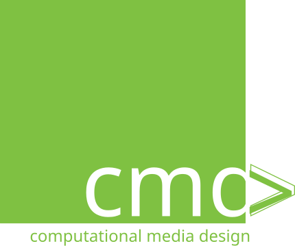
Creative Computing Curriculum, Harvard Graduate School of Education
Creative computing supports the development of personal connections to computing, by drawing upon creativity, imagination, and interests.
Creative Computing Curriculum, Harvard Graduate School of Education
- Experimenting and iterating
- Testing and debugging
- Reusing and remixing
- Abstracting and modularizing
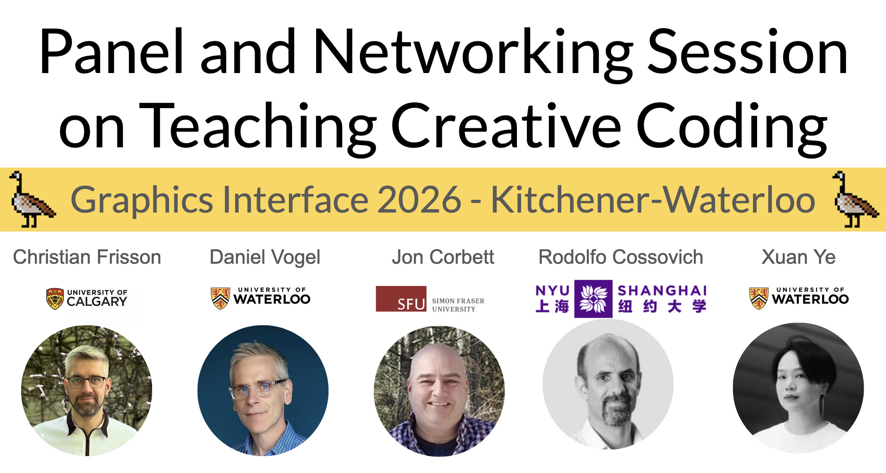
Ever felt drawn by unexpected or emergent processes in your work?
Anybody wants to share?
By the end of this course, students should be able to:
(Subject to change with notification - in D2L > Course Information > Schedule)
| Week | Tuesday | Thursday |
|---|---|---|
| Week 1 (Aug 31 - Sep 4) | Lecture (Course Intro) | Lecture (Git: Versioning, Documentation, Integration) |
| Week 2 (Sep 7-11) | Lecture (Accessibility) | Lecture (Glueing Modalities: Sequencers, Mappers) + Mapping Tools Workshop 2026 |
| Week 3 (Sep 14-18) | (Personal) Pitch (Course Expectations and Project Ideation) | Lecture + Studio (Audio: Synthesis, Sampling, Spatial) |
| Week 4 (Sep 21-25) | Interactive Presentations (Audio) | Lecture + Studio (Vision: Graphics, Video, Projection Mapping) |
| Week 5 (Sep 28 - Oct 2) | Interactive Presentations (Vision) | Lecture + Studio (Touch: Haptics) |
| Week 6 (Oct 5-9) | Interactive Presentations (Touch) | Lecture + Studio (Interaction: Input, Cameras, Sensors, Embedded Computing) |
| Week 7 (Oct 12-16) | Interactive Presentations (Interaction) | (Guest) Lecture (Gen AI) by Ahmed Abuzuraiq |
| Week 8 (Oct 19-23) | (Group) Pitch (Project Ideation) | (Group) Project (Low-fidelity Prototyping) |
| Week 9 (Oct 26-30) | Interactive Presentations (Low-fidelity Prototype Showcase) | (Group) Project (High-fidelity Prototyping) |
| Week 10 (Nov 2-6) | None (Term Break) | None (Term Break) |
| Week 11 (Nov 9-13) | (Group) Project (High-fidelity Prototyping) | (Group) Project (High-fidelity Prototyping) |
| Week 12 (Nov 16-20) | Interactive Presentations (High-fidelity Prototype Showcase) | (Group) Project (Final Version Prototyping) |
| Week 13 (Nov 23-27) | (Group) Project (Final Version Prototyping) | (Group) Project (Final Version Prototyping) |
| Week 14 (Nov 30 - Dec 4) | Interactive Presentations (Final Version Showcase) | Individual Reflections Due + (Group) Project Documentation Due + Lecture (Course Reflection) |
| Component | Studio (Individual) | Project (Group) | Total |
|---|---|---|---|
| Interactive Presentations | 20% (4 x 5%) | 15% (3 x 5%) | 35% (7 x 5%) |
| Pitches | 15% (1 x 15%) | 15% (1 x 15%) | 30% (2 x 15%) |
| Documentation | / | 20% (1 x 20%) | 20% (1 x 20%) |
| Individual Reflection | 15% (1 x 15%) | / | 15% (1 x 15%) |
| Total | 50% | 50% | 100% |
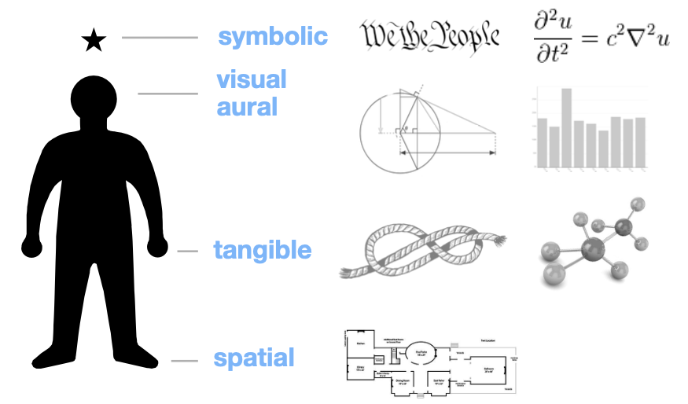
Hack an existing example or project to experience its design space and to pique (y)our interest.
Each Interactive Presentation weights 5% and is presented in class (presentation with demos).
Each Pitch weighs 15% and is presented in class (simple presentation).
A small report with:
These policies are in the course outline that is our learning contract.
Students must use their UCalgary account for all course correspondence.
Please read these instructions before contacting the teaching team (instructor and teaching assistants):
- Students should use in priority Microsoft Teams public conversations in the CPSC 599+601 Creative Computing Fall 2026 Teams team so that contents can benefit all students, except for private matters that should be sent via email only.
- Students should contact the teaching team via email only for private matters, must specify “CPSC 599+601 Creative Computing” in the email subject, and they should include their full name and UCID in their request.
- Instructors reserve the right to disregard correspondences that do not follow these requirements.
Students absent from an Interactive Presentations or Pitches will receive a grade of 0 for that presentation, unless alternative arrangements have been made (such as submitting a pre-recorded video of their presentation before the presentation day, or arranging for carrying over grades from next Interactive Presentations or Pitches, at the discretion of the instructor).
Unless alternative arrangements have been made, late submissions will be graded as follows:
- After the deadline up to 24 hours late: -25%
- After 24 hours up to 48 hours late: -50%
- Over 48 hours late: -100% (i.e., not accepted)
Generative AI is permitted as long as student disclose their use: student will need to mention each prompt and the tools / models they employed.
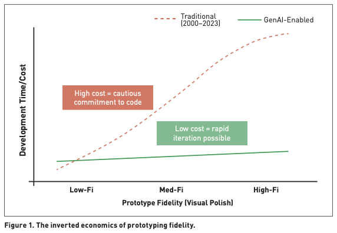
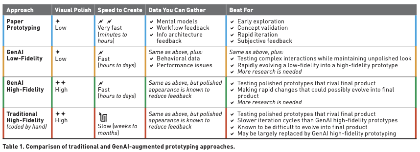
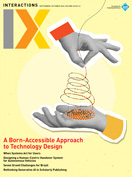
What if our artifacts are physical?
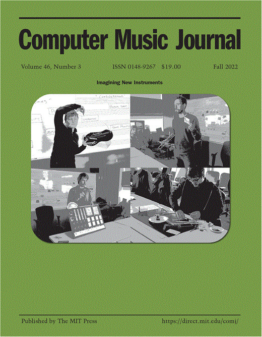
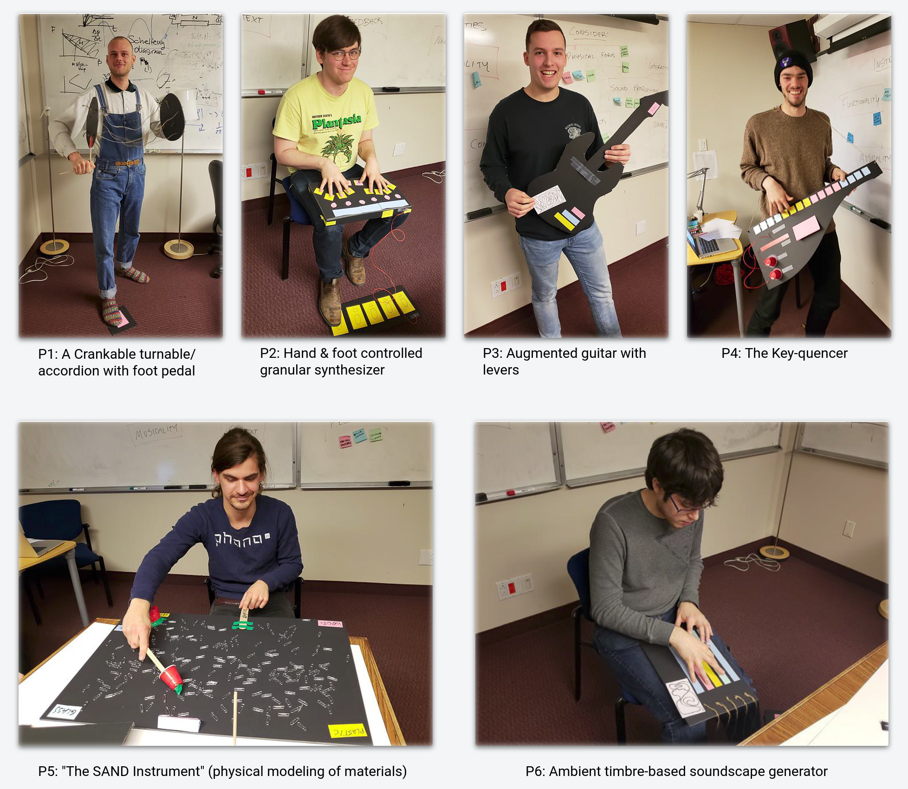
MUMT 620 2018 course assignment with John Sullivan and Collin WangMathias K. (P1) and Mathias B. (P5)’s low-fidelity prototyping for MUMT 620 shaped their master thesis.
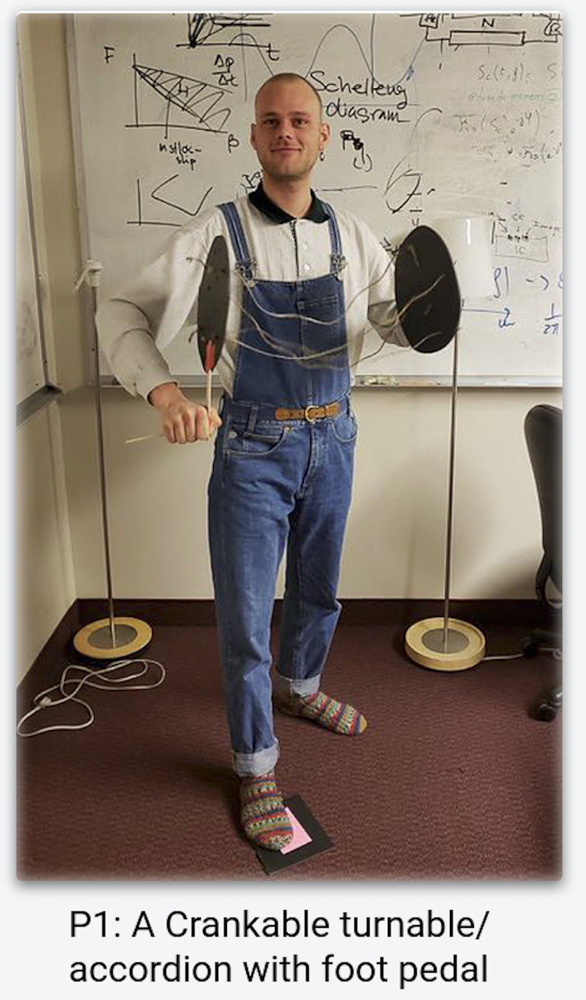
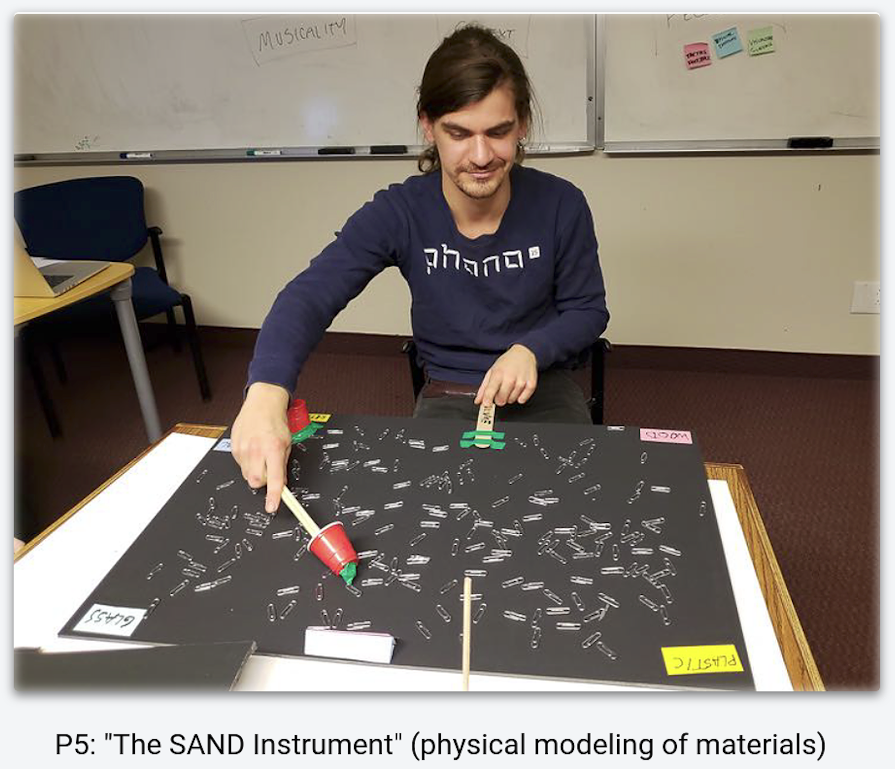
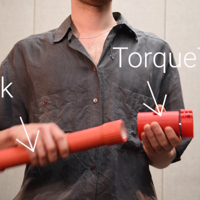
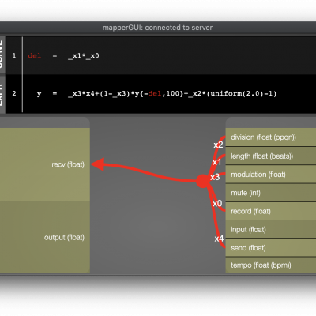
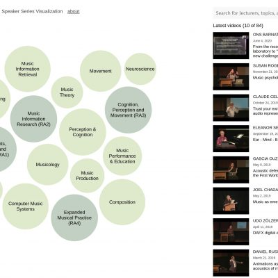